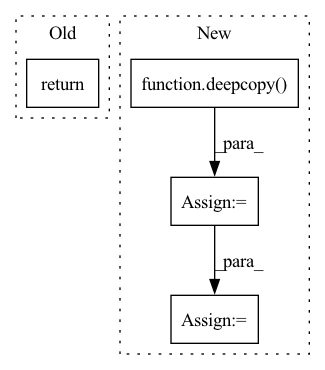

Pattern ID :12052
Before Change
trainer = FreezeTrainer(conf_train, model, checkpoint)
train_metrics = trainer.fit(train_dl, test_dl)
return train_metrics
After Change
// get data with new batch size for freeze training
// NOTE: important to create copy and modify as otherwise get_data will return
// a cached data loader by hashing the id of conf_loader
conf_loader_freeze = deepcopy( conf_loader)
conf_loader_freeze["train_batch"] = conf_loader["freeze_loader"]["train_batch"]
logger.pushd("freeze_data")
train_dl, test_dl = self.get_data(conf_loader_freeze)
trainer = FreezeTrainer(conf_train_freeze, model, checkpoint)
freeze_train_metrics = trainer.fit(train_dl, test_dl)
logger.popd()In pattern: SUPERPATTERN
Frequency: 4
Non-data size: 4
Instances Fragment ID: 40709166
Project Name: microsoft/archai
Commit Name: 2dd7cb63db9bb70878c96fb18cb55aa9026b2e82
Time: 2022-12-16
Author: dedey@microsoft.com
File Name: archai/algos/proxynas/freeze_evaluator.py
M Class Name: FreezeEvaluator
N Class Name: FreezeEvaluator
M Method Name: train_model(4)
N Method Name: train_model(4)
M Parent Class: Evaluater,EnforceOverrides
N Parent Class: Evaluater,EnforceOverrides
M File Name: archai/algos/proxynas/freeze_evaluator.py
N File Name: archai/algos/proxynas/freeze_evaluator.py
M Start Line: 37
M End Line: 48
N Start Line: 37
N End Line: 61
Before Change
)
input_constraint = input_constraint_.copy()
return input_constraint, info
def get_backprojection_error(
self, target_set, backprojection_sets, propagator, t_maxAfter Change
if overapprox:
for i in np.arange(0 + propagator.dynamics.dt + 1e-10, t_max, propagator.dynamics.dt):
next_target_set = over_approximate_constraint(deepcopy( backprojection_set_this_timestep) )
// Run one step of backprojection analysis
backprojection_set_this_timestep, info_this_timestep = self.get_one_step_backprojection_set(
next_target_set,
dummy_backprojection_set,
propagator, Fragment ID: 40709176
Project Name: mit-acl/nn_robustness_analysis
Commit Name: 63e79909e36636ad1ba6c548408a853c1564488d
Time: 2022-06-08
Author: mfe@mit.edu
File Name: nn_closed_loop/nn_closed_loop/partitioners/ClosedLoopPartitioner.py
M Class Name: ClosedLoopPartitioner
N Class Name: ClosedLoopPartitioner
M Method Name: get_backprojection_set(8)
N Method Name: get_backprojection_set(8)
M Parent Class: partitioners.Partitioner
N Parent Class: partitioners.Partitioner
M File Name: nn_closed_loop/nn_closed_loop/partitioners/ClosedLoopPartitioner.py
N File Name: nn_closed_loop/nn_closed_loop/partitioners/ClosedLoopPartitioner.py
M Start Line: 375
M End Line: 380
N Start Line: 527
N End Line: 565
Before Change
trainer = FreezeTrainer(conf_train, model, checkpoint)
train_metrics = trainer.fit(train_dl, test_dl)
return train_metricsAfter Change
// get data with new batch size for freeze training
// NOTE: important to create copy and modify as otherwise get_data will return
// a cached data loader by hashing the id of conf_loader
conf_loader_freeze = deepcopy( conf_loader)
conf_loader_freeze["train_batch"] = conf_loader["freeze_loader"]["train_batch"]
logger.pushd("freeze_training")
train_dl, test_dl = self.get_data(conf_loader_freeze)
// now just finetune the last few layers
trainer = FreezeTrainer(conf_train_freeze, model, checkpoint)
freeze_train_metrics = trainer.fit(train_dl, test_dl) Fragment ID: 40709162
Project Name: microsoft/archai
Commit Name: 2dd7cb63db9bb70878c96fb18cb55aa9026b2e82
Time: 2022-12-16
Author: dedey@microsoft.com
File Name: archai/algos/proxynas/freeze_natsbench_evaluater.py
M Class Name: FreezeNatsbenchEvaluater
N Class Name: FreezeNatsbenchEvaluater
M Method Name: train_model(4)
N Method Name: train_model(4)
M Parent Class: Evaluater
N Parent Class: Evaluater
M File Name: archai/algos/proxynas/freeze_natsbench_evaluater.py
N File Name: archai/algos/proxynas/freeze_natsbench_evaluater.py
M Start Line: 77
M End Line: 88
N Start Line: 78
N End Line: 102
Before Change
[max(0,windows[index][0][0]), min(image_shape[1], windows[index][0][1])],
[max(0,windows[index][1][0]), min(image_shape[0], windows[index][1][1])],
]
return windows
def filter_windows(windows, min_size = None, max_size = None, min_area = None, max_area = None, min_flux = None, max_flux = None, image = None):
After Change
def scale_windows(windows, image_shape = None, expand_scale = 1., expand_border = 0.):
new_windows = {}
for index in list(windows.keys()):
new_window = deepcopy( windows[index])
// Get center and shape of the window
center = (
(new_window[0][0] + new_window[0][1])/2,
(new_window[1][0] + new_window[1][1])/2,
)
shape = (
new_window[0][1] - new_window[0][0],
new_window[1][1] - new_window[1][0],
)
// Update the window with any expansion coefficients
new_window = [
[int(center[0] - expand_scale*shape[0]/2 - expand_border), int(center[0] + expand_scale*shape[0]/2 + expand_border)],
[int(center[1] - expand_scale*shape[1]/2 - expand_border), int(center[1] + expand_scale*shape[1]/2 + expand_border)],
]
// Ensure the window does not exceed the borders of the image
if not image_shape is None:
new_window = [
[max(0,new_window[0][0]), min(image_shape[1], new_window[0][1])],
[max(0,new_window[1][0]), min(image_shape[0], new_window[1][1])],
]
new_windows[index] = new_window
return new_windows
def filter_windows(windows, min_size = None, max_size = None, min_area = None, max_area = None, min_flux = None, max_flux = None, image = None): Fragment ID: 40709173
Project Name: connorstoneastro/autoprof
Commit Name: dc4b5bcdc2c23f3d4c02a1823cd4d42868a03ddf
Time: 2023-03-03
Author: connorstone628@gmail.com
File Name: autoprof/utils/initialize/segmentation_map.py
M Class Name: AnonimousClass
N Class Name: AnonimousClass
M Method Name: scale_windows(4)
N Method Name: scale_windows(4)
M Parent Class:
N Parent Class:
M File Name: autoprof/utils/initialize/segmentation_map.py
N File Name: autoprof/utils/initialize/segmentation_map.py
M Start Line: 42
M End Line: 63
N Start Line: 43
N End Line: 67